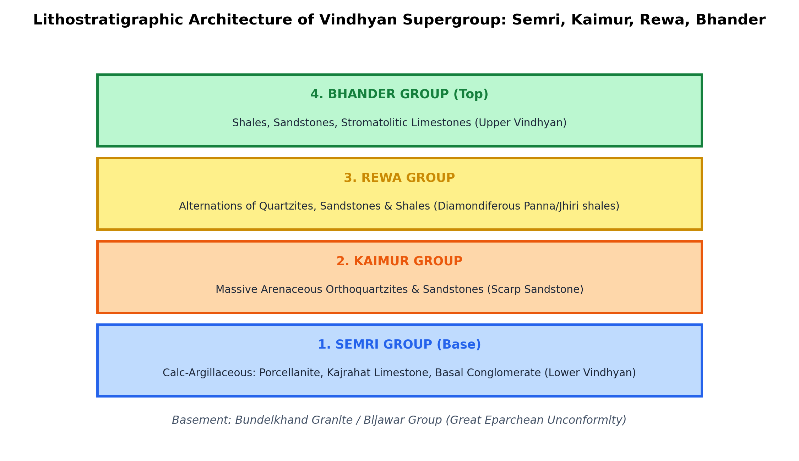
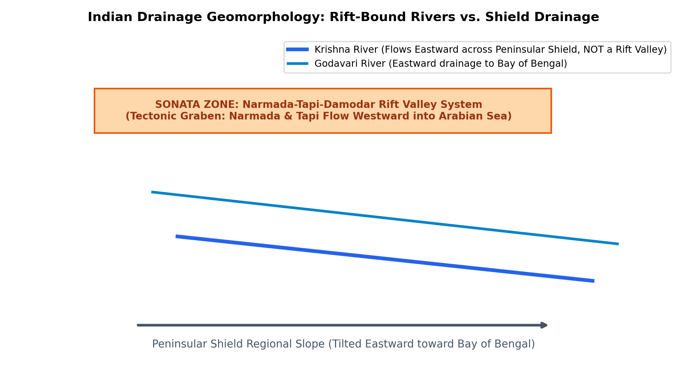
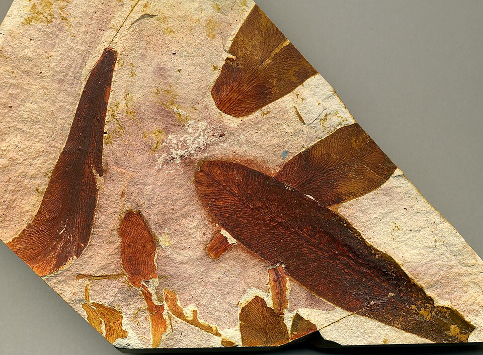
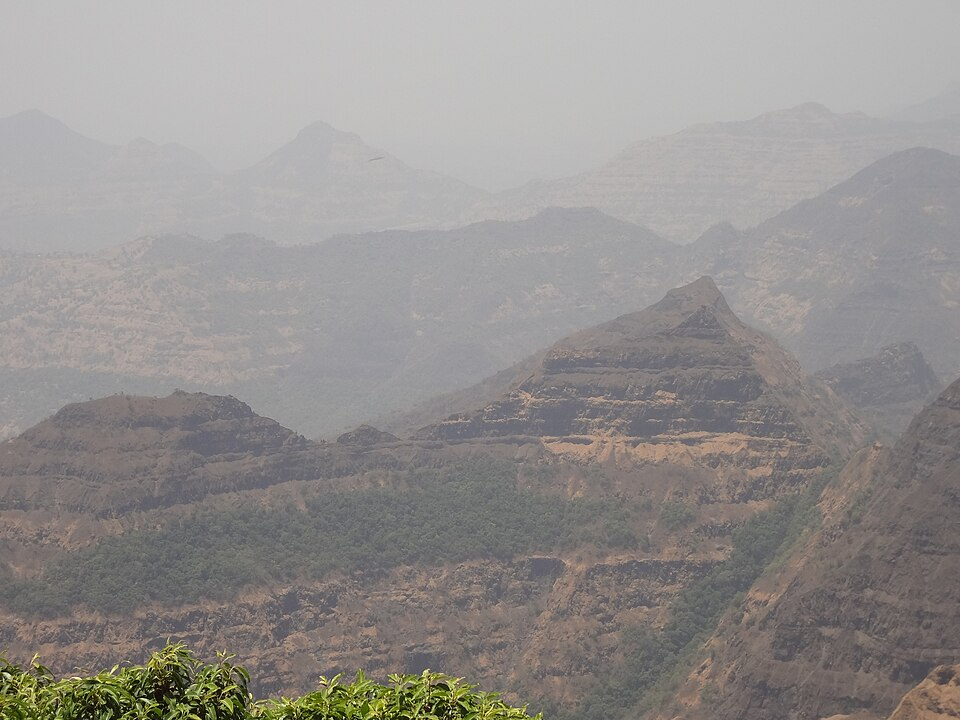
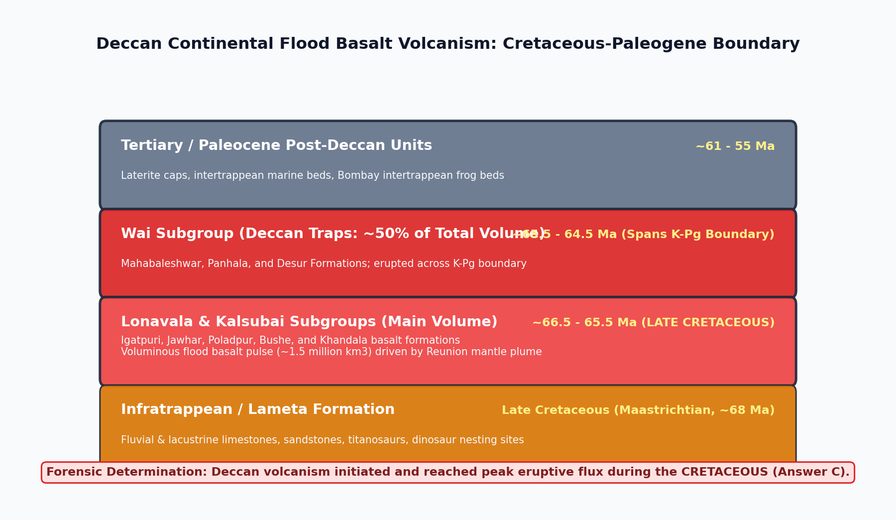
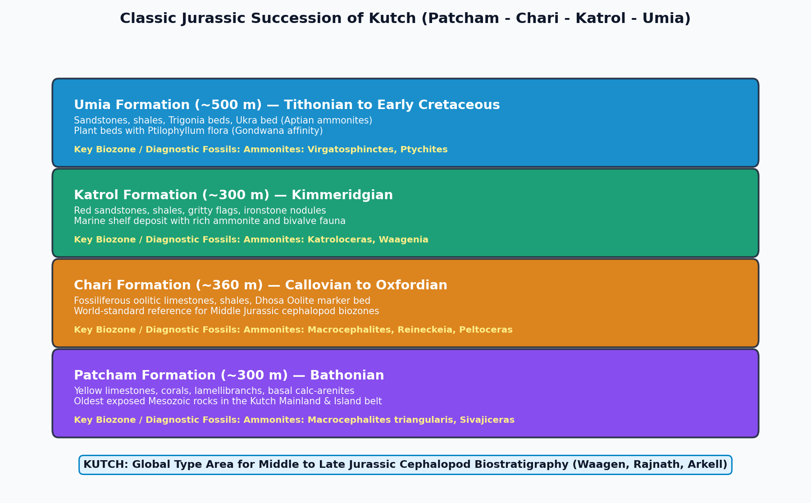
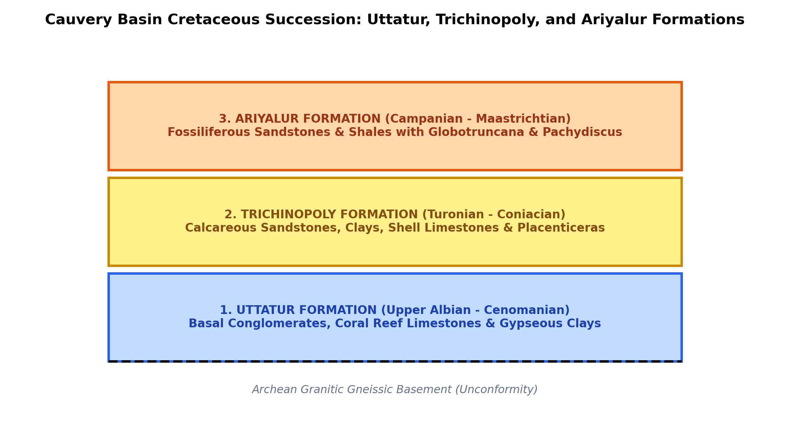

8.1 Principles of Stratigraphy & Geological Time Scale

Stratigraphy is the science of the description, correlation, and chronological classification of layered rock formations. It relies on four fundamental principles: Law of Superposition (in undeformed strata, the oldest bed lies at the bottom and youngest at the top), Principle of Original Horizontality, Law of Faunal Succession (each stratum contains a unique fossil assemblage), and Cross-Cutting Relationships.
Physiographic Divisions of India. Geologically, India comprises three distinct regions: 1. Peninsular Shield (stable ancient Archaean craton of South & Central India), 2. Extra-Peninsular Region (the intensely folded Himalayan mountain belt with marine Palaeozoic–Mesozoic–Tertiary sequences), and 3. Indo-Gangetic Alluvial Plain (a vast Pleistocene–Recent foreland trough).
Indian Stratigraphic Classification (T. H. Holland): Divided into Archaean Group ($>2500\text{ Ma}$), Purana Group (Cuddapah & Vindhyan Proterozoic basins), Dravidian Group (Cambrian to Middle Carboniferous marine Himalayan beds), and Aryan Group (Upper Carboniferous Gondwana to Recent).
8.9 Archaean Complex & Dharwar Supergroup

The Archaean Group forms the crystalline basement of Peninsular India, consisting of the Peninsular Gneissic Complex (granodioritic-tonalitic gneisses), Charnockite Series (hypersthene granulites of Eastern Ghats & Tamil Nadu), Closepet Granite, and the metavolcano-sedimentary Dharwar Supergroup.
Dharwar Supergroup (Karnataka). Folded greenstone schist belts resting unconformably on older gneisses, subdivided into: Sargur Group ($>3000\text{ Ma}$ high-grade enclaves), Bababudan Group (basal conglomerates, basic volcanics, and Banded Magnetite Quartzite iron ores), and Chitradurga Group (greywackes, phyllites, limestones, and Banded Hematite Quartzites). Equivalent belts include the Iron Ore Group (Singhbhum-Odisha), Sausar & Sakoli Series (Central India — rich in Manganese), and Aravalli Supergroup (Rajasthan). Economically, Archaean rocks yield over 90% of India's iron ore, manganese, gold (Kolar & Hutti), copper, chromite, and mica.
8.21 Purana Group: Cuddapah, Delhi, and Vindhyan Supergroups


Separated from the Archaean basement by the great Eparchaean Unconformity, the Purana basins preserve thick, largely unmetamorphosed Proterozoic shallow-marine sediments:
Cuddapah Supergroup (Andhra Pradesh). Over 6,000 m of quartzites, shales, slates, and dolomitic limestones divided into Papaghni, Chitravati, Nallamalai, and Kistna Groups; hosts asbestos, barite, and limestone.
Delhi Supergroup (Rajasthan). Strongly folded Alwar (quartzites) and Ajabgarh (pelites/calc-silicates) Groups intruded by Erinpura Granite; hosts copper (Khetri) and lead-zinc ores.
Vindhyan Supergroup (Central India). Horizontal, undeformed sequence ($>100,000\text{ km}^2$) divided into Lower Vindhyan (Semri Group: marine Rohtas & Kajrahat cement limestones) and Upper Vindhyan (Kaimur, Rewa—with Panna diamondiferous conglomerates, and Bhander Groups—yielding world-famous architectural red/buff sandstones).
8.29 Gondwana Supergroup



Deposited in fault-bounded intracratonic river rift basins (Damodar, Mahanadi, Son-Narmada, and Pranhita-Godavari valleys) from Upper Carboniferous to Lower Cretaceous ($\sim 300\text{--}100\text{ Ma}$):
Lower Gondwana (Glossopteris Flora). Begins with the glacial Talchir Formation (Talchir Boulder Bed tillite with striated pebbles + needle shales), overlain by the coal-bearing Damuda Group—comprising Barakar Formation (India's premier bituminous coal seams in Jharia, Raniganj, Bokaro, Talcher), Barren Measures (ironstone shales devoid of coal), and Raniganj Formation—capped by Triassic red-beds of the Panchet Formation (Lystrosaurus reptile).
Upper Gondwana (Ptilophyllum Flora). Sandstones, clays, and Rajmahal basaltic traps (Mahadeva, Rajmahal, Jabalpur formations) deposited under warmer semi-arid conditions.
8.36 Mesozoic & Deccan Traps


- Archaean Gneisses & Charnockites: High bearing capacity ($UCS > 150\text{ MPa}$); ideal for concrete gravity dams.
- Purana Limestones (Cuddapah/Vindhyan): Watch for karst solution caverns requiring curtain grouting.
- Gondwana Coal Measures: Soft, friable sandstones and methane gas hazards in tunnels.
- Deccan Traps: Sound basalt flows separated by weak, plastic red bole clay beds that act as slope slip planes.
- Siwalik Molasse: Poorly consolidated, thrust-sheared sandstones prone to Himalayan landslides and tunnel squeezing.
Marine Mesozoic. Richly fossiliferous marine sequences occur in the Spiti Himalaya (Triassic Lilang, Jurassic Spiti Shales), Kutch (Patcham, Chari, Katrol, Umia ammonite zones), and Tiruchirappalli / Cauvery Basin (Uttatur, Trichinopoly, Ariyalur, Niniyur Cretaceous stages).
Deccan Traps (Late Cretaceous–Early Eocene). Vast tholeiitic flood basalts covering $>500,000\text{ km}^2$ in western and central India, erupted quietly through deep crustal fissures. Horizontal flows weather into step-like trappean terraces separated by thin lacustrine Inter-trappean Beds (yielding Physa prinsepii) and weathered clayey Red Boles. Weathers into fertile black cotton soil (regur).
8.40 Tertiary System & Siwalik Supergroup


The Himalayan orogeny elevated the Tethys Sea and created a sub-Himalayan foreland basin filled by 6,000–8,000 m of freshwater molasse sediments of the Siwalik Supergroup (Middle Miocene to Lower Pleistocene): Lower Siwaliks (Kamlial, Chinji), Middle Siwaliks (Nagri, Dhok Pathan), and Upper Siwaliks (Tatrot, Pinjor, Boulder Conglomerate), world-renowned for mammalian fossils (Sivapithecus, Hipparion, Stegodon). Marine Tertiary rocks in Assam (Disang, Barail, Surma, Tipam) and Gujarat host India's major onshore oilfields.
Chapter Review Questions (K. M. Bangar)
1. State the principles of stratigraphy and give T. H. Holland's broad classification of Indian geological formations.
2. Describe the stratigraphy, lithology, and economic importance of the Dharwar, Cuddapah, and Vindhyan Supergroups.
3. Give a complete account of the Gondwana Supergroup, its glacial origin, coal-bearing horizons, and distribution in India.
4. Write notes on: (a) Deccan Traps and Inter-trappean beds, (b) Marine Cretaceous of Tiruchirappalli, (c) Siwalik Supergroup.
Visual Reference Gallery (Clean Color Diagrams & Specimens)
Supplementary full-color diagrams from Winter, Perkins, Fossen, Boggs and high-resolution USGS/Wikimedia photographs replacing scanned textbook drawings.

